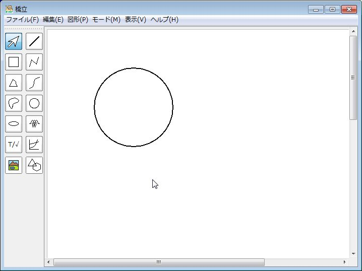

移動
- (1) 描画領域で円を選択する
- (2) 円の近くで少し移動し、カーソルが
 になったらクリックする
になったらクリックする
- (3) クリッしたまま移動する → 円が移動する
コントロールキーと矢印キーを一緒に押す → 矢印キーの方向に移動する。
- (4) 選択を解除する
変形
- (1) 描画領域で円を選択する
- (2) 円上の□の近くに移動し、カーソルがやになったらクリックする
- (3) クリッしたまま移動する → 円の大きさが変わる
円の場合は半径が変わり、楕円の場合は横方向と縦方向の軸の長さがそれぞれ変わる。
- (4) 選択を解除する

円の切り替え
- (1) 描画領域で円を選択する
- (2) 円の近くに移動し、カーソルが、やになったら右クリックする → メニューが表示される
- (3) メニューの円または楕円を選択する → 円と楕円が切り替わる
楕円を円に切り替えるときは、短軸と長軸のどちらを半径に選ぶか、選択する画面が表示される。
内角の変更
- (1) 描画領域で円を選択する
- (2) 円から突き出している四角をクリックする
- (3) クリックしたまま移動する → 内角の角度が変わる
もう一つの突き出している四角を移動させると、円弧のもう一つの端点が移動する。
- (4) 選択を解除する
円弧、扇形、弓形の切り替え
- (1) 描画領域で円を選択する
- (2) 円の近くに移動し、カーソルが、やになったら右クリックする → メニューが表示される
- (3) メニューの円弧、扇形、弓形のどれかを選択する → 形が切り替わる